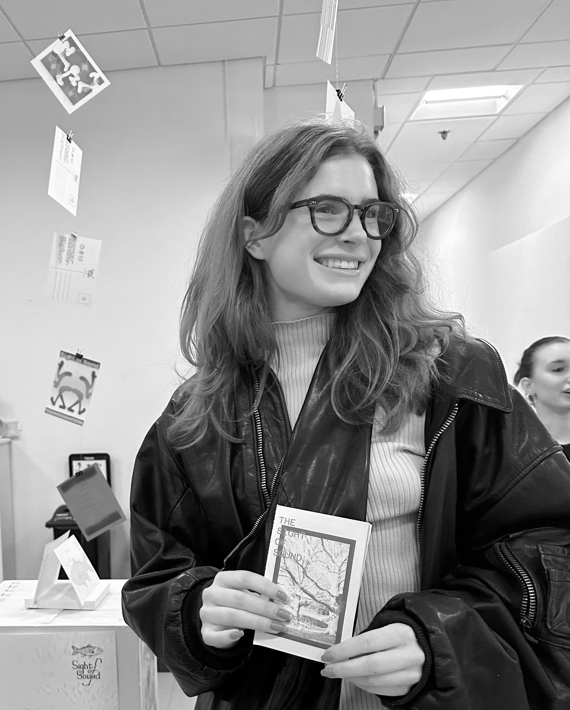
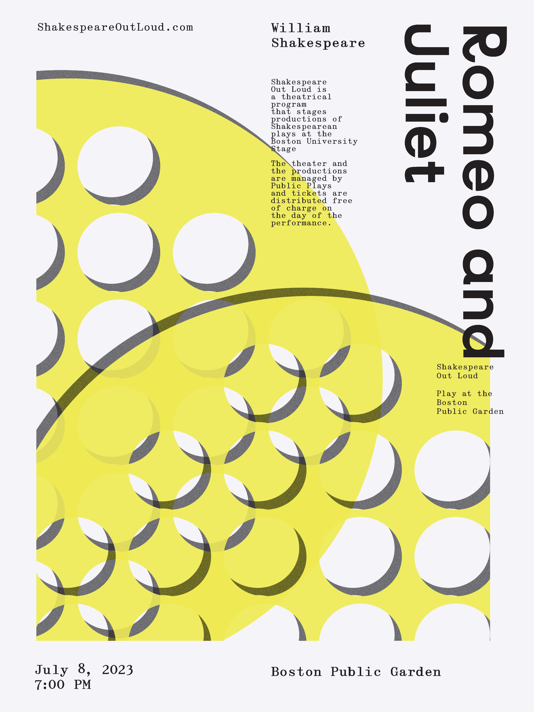
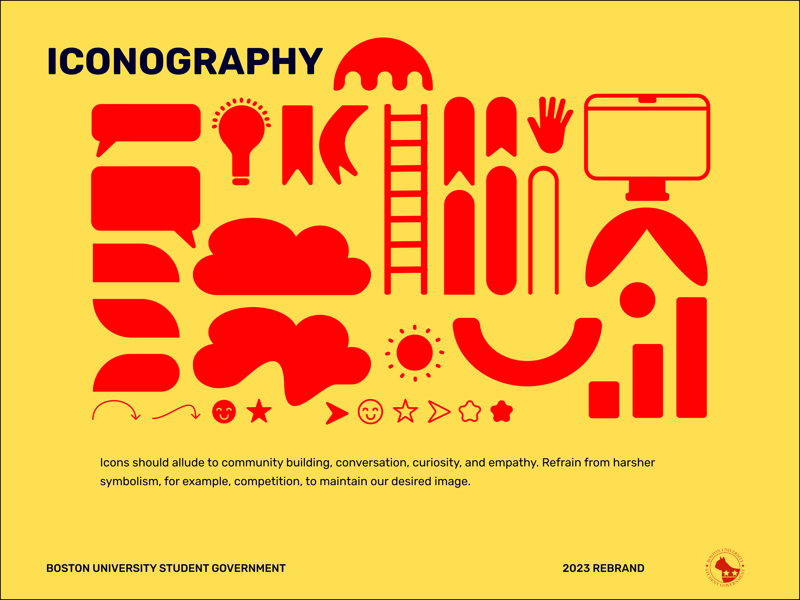
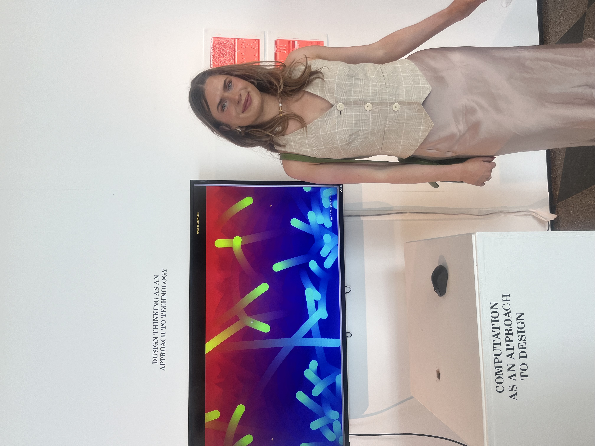
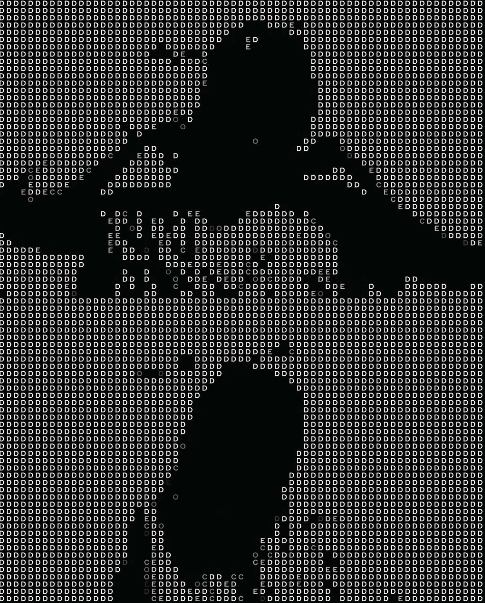
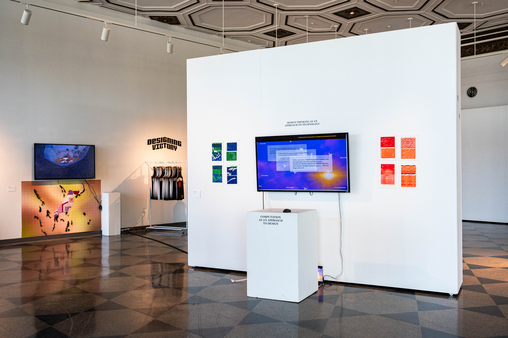

I grew up in Charlotte, NC (and a little in south georgia) in a big, loud, and loyal southern family. I spent my childhood loving art, fueling my decision to leave the south to pursue a creative career. I started drawing before I could walk, so it has always been something intrinsically tied to the way I understand the world. I love people, food, music, and authenticity within everything! I care a lot about the impact I have on the world on a day to day basis and I am always looking to learn new things.
I graduated from Boston University in May 2024 and promptly began my post baccalaureate fellowship in project management for Spark! at CDS. I a manage the user experience practicum and software engineering practicum, which has been a blast. Our projects have really significant social impact, led by clients who truly care about their work. I enjoy teaching and managing students, finding myself constantly blown away by the work produced. I am figuring out what I want to do next through this fellowship, also pursuing my masters in software development. I love branding, UX design, front-end dev, and project management. However, the main things I am looking for in my next job is a company with a positive social impact. Through pursuing my BFA in graphic design and a BS in advertising, I developed a love for creating visual identities and systems. With a desire to deeply understand creative problem solving and explore emerging design tools further, I emersed myself into the intersection of tech and design. Through completing computer science courses and UX/UI courses, I fine-tuned my skills in interaction design and creative coding. I find strength in collaboration, experimentation, and empathy. I believe in designing systems, tools, and artifacts that honor humanity through critique, transparency, and joy.